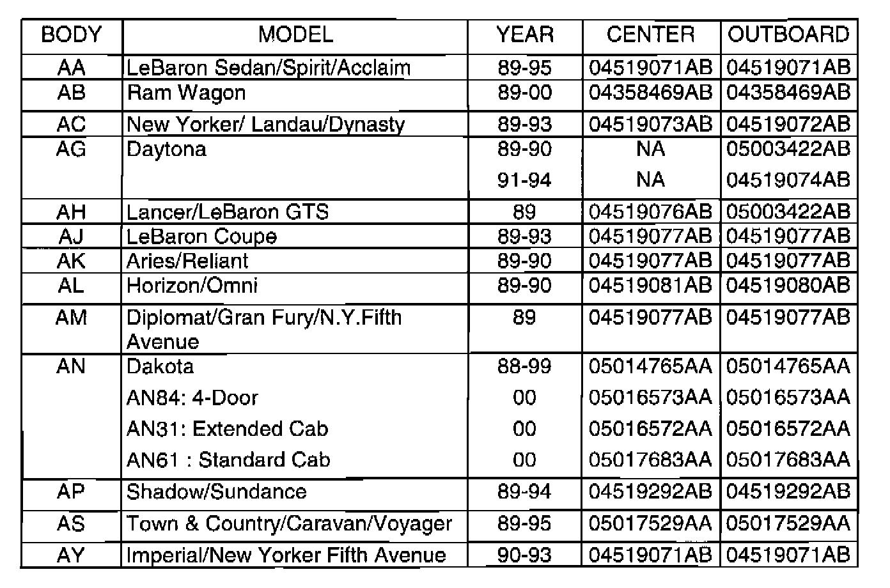
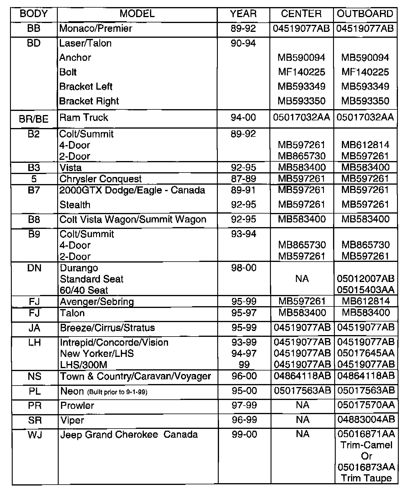
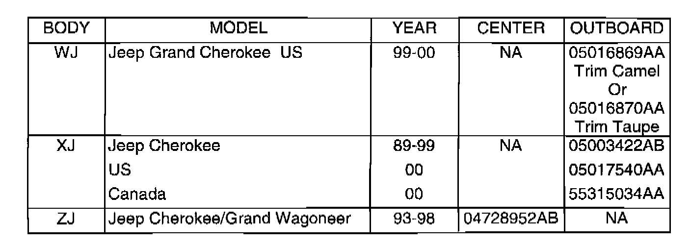
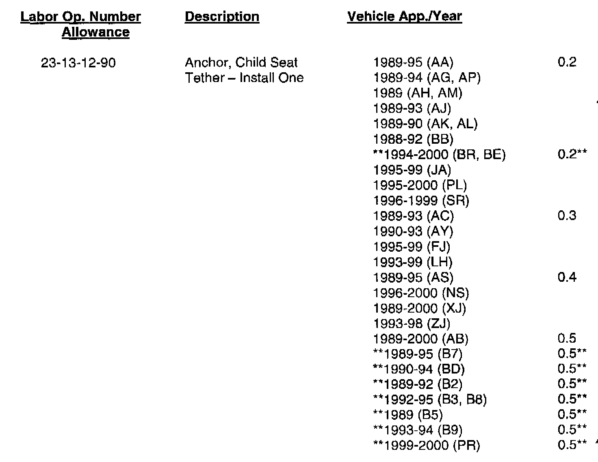
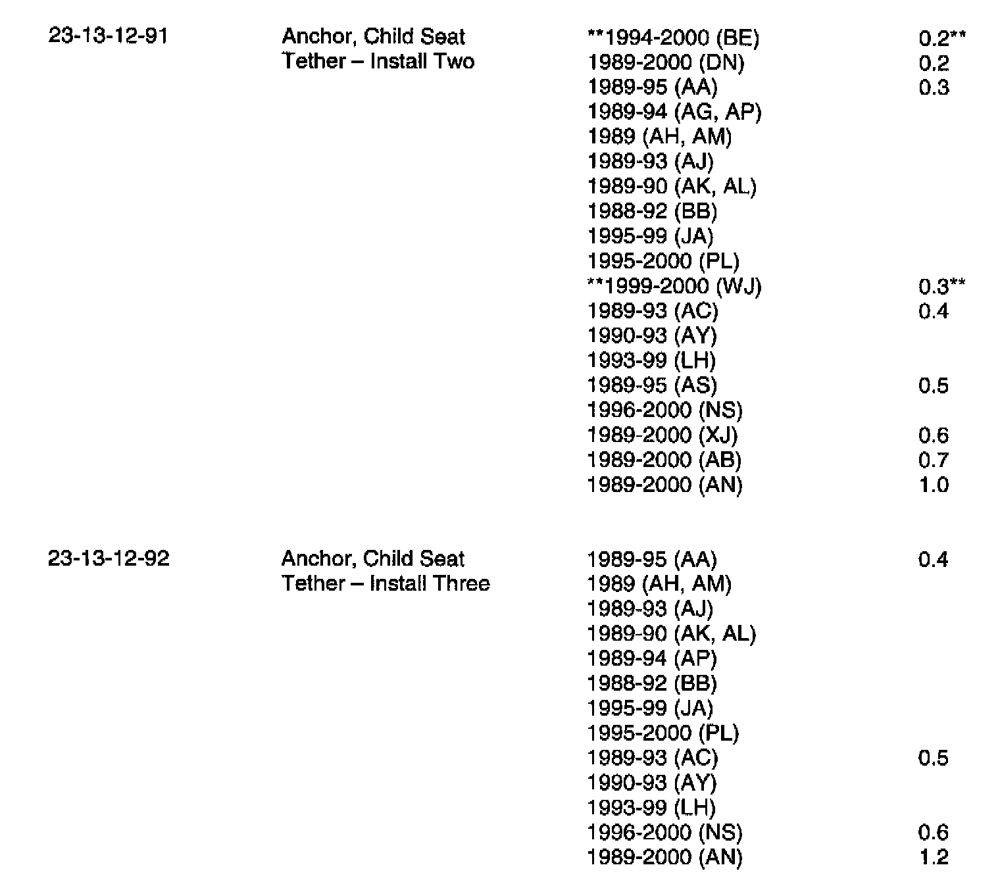

Child Seat Tether Anchor - Labor/Parts Identification
NUMBER: 23-35-99 Rev. AGROUP: Body
DATE: Oct. 1, 1999
THIS BULLETIN SUPERSEDES TECHNICAL SERVICE BULLETIN 23-35-99 DATED SEPTEMBER 3, 1999, WHICH SHOULD BE REMOVED FROM YOUR FILES. ALL REVISIONS ARE HIGHLIGHTED WITH **ASTERISKS** AND INCLUDE CHANGES IN SOME TIME ALLOWANCES.
SUBJECT:
Child Seat Tether Anchors
NOTE:
THIS BULLETIN DOES NOT APPLY TO DAIMLERCHRYSLER CANADA DEALERS.
MODELS:
1989 - 1995 (AA) Spirit/Acclaim/LeBaron Sedan
1989 - 2000 (AB) Ram Van/Wagon
1989 - 1993 (AC) Dynasty/New Yorker/New Yorker Salon
1989 - 1994 (AG) Daytona
1989 (AH) Lancer/Lebaron GTS
1989 - 1993 (AJ) LeBaron Coupe
1989 - 1990 (AK) Aries/Reliant
1989 - 1990 (AL) Horizon/Omni
1989 (AM) Diplomat/Gran Fury/New Yorker Fifth Avenue
1989 - 2000 (AN) Dakota
1989 - 1994 (AP) Shadow/Sundance
1989 - 1995 (AS) Town & Country/Caravan/Voyager
1990 - 1993 (AY) Imperial/New Yorker Fifth Avenue
1988 - 1992 (BB) Monaco/Premier
1990 - 1994 (BD) Laser/Talon
1994 - 2000 (BR/BE) Ram Truck
1989 - 1992 (B2) Colt/Summit
1992 - 1995 (B3) Colt Vista
1989 (B5) Conquest
1989 - 1995 (B7) Stealth (2000 GTX Dodge/Eagle, Canada)
1992 - 1995 (B8) Colt Vista Wagon/Summit Wagon
1993 - 1994 (B9) Colt/Summit
1998 - 2000 (DN) Durango
1995 - 1999 (FJ) Sebring/Avenger/Talon
1995 - 1999 (JA) Cirrus/Stratus/Breeze
1993 - 1999 (LH) Concorde/Intrepid/Vision/LHS/New Yorker/300M
1996 - 2000 (NS) Town & Country/Caravan/Voyager
1995 - 2000 (PL) Neon
1997 - 1999 (PR) Prowler
1996 - 1999 (SR) Viper/Viper GTS
1999 - 2000 (WJ) Grand Cherokee
1989 - 2000 (XJ) Cherokee/Wagoneer
1993 - 1998 (ZJ) Grand Cherokee/Grand Wagoneer
NOTE:
THIS BULLETIN IS PROVIDED TO IDENTIFY THE PARTS AND LABOR OPERATION NUMBERS NECESSARY TO INSTALL A CHILD SEAT TETHER ANCHOR. DAIMLERCHRYSLER WILL REIMBURSE YOU FOR THE ANCHORS AND LABOR TO INSTALL THEM. THIS IS BEING DONE IN THE INTEREST OF CUSTOMER SATISFACTION. REFER TO GLOBAL WARRANTY ADMINISTRATION BULLETIN # D-99-23 FOR COMPLETE REIMBURSEMENT INSTRUCTIONS.
DISCUSSION
User-ready child restraint tether strap anchors will be provided in passenger cars in the 2000 Model Year, and in light truck in the 2001 Model Year. Tether straps improve the performance of child restraints in collisions. Because of the publicity that has accompanied the "Fit for a kid" Program, owners of earlier products are expected to approach dealers for the free provision and installation of the anchor hardware. DaimlerChrysler Corporation is offering child seat tether anchors for the selected vehicles listed above. Each tether anchor is packaged in a kit containing all necessary parts and a detailed instruction sheet.



PARTS REQUIRED:
POLICY: Customer Satisfaction


TIME ALLOWANCE:
Failure Code: CG - Customer Satisfaction